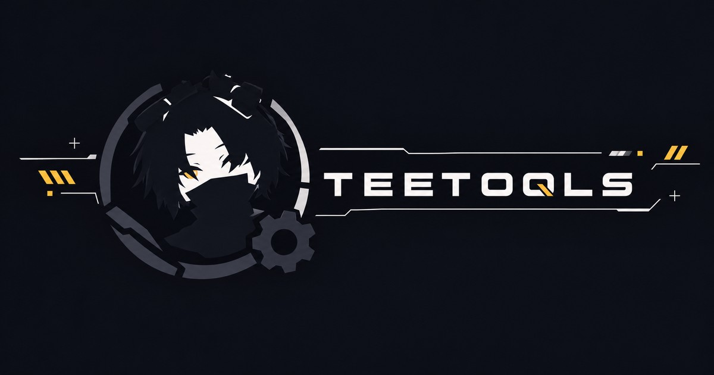

A small, growing set of Unity Editor tools for avatar creators. Add the repository once — every tool in the series shows up in VCC from then on.
Scans an avatar for common performance and upload issues — missing scripts, broken PhysBones, oversized textures, broken animation references — and explains what's actually worth fixing.